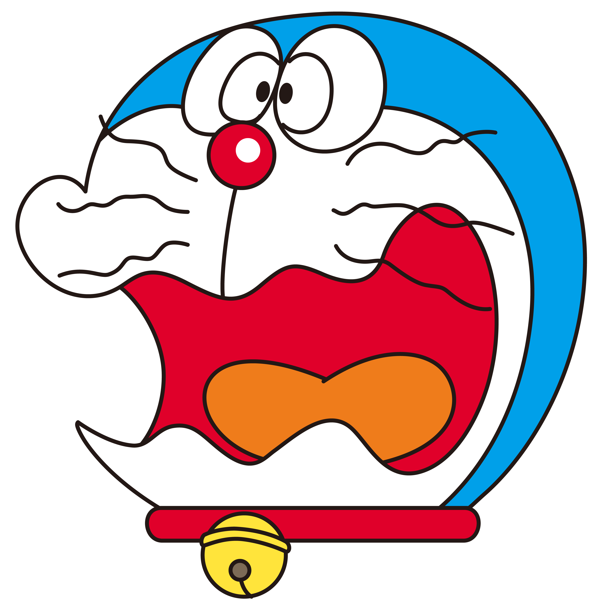
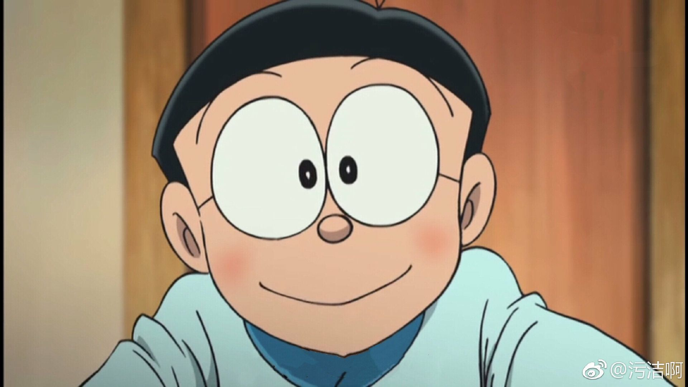
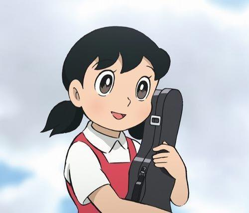
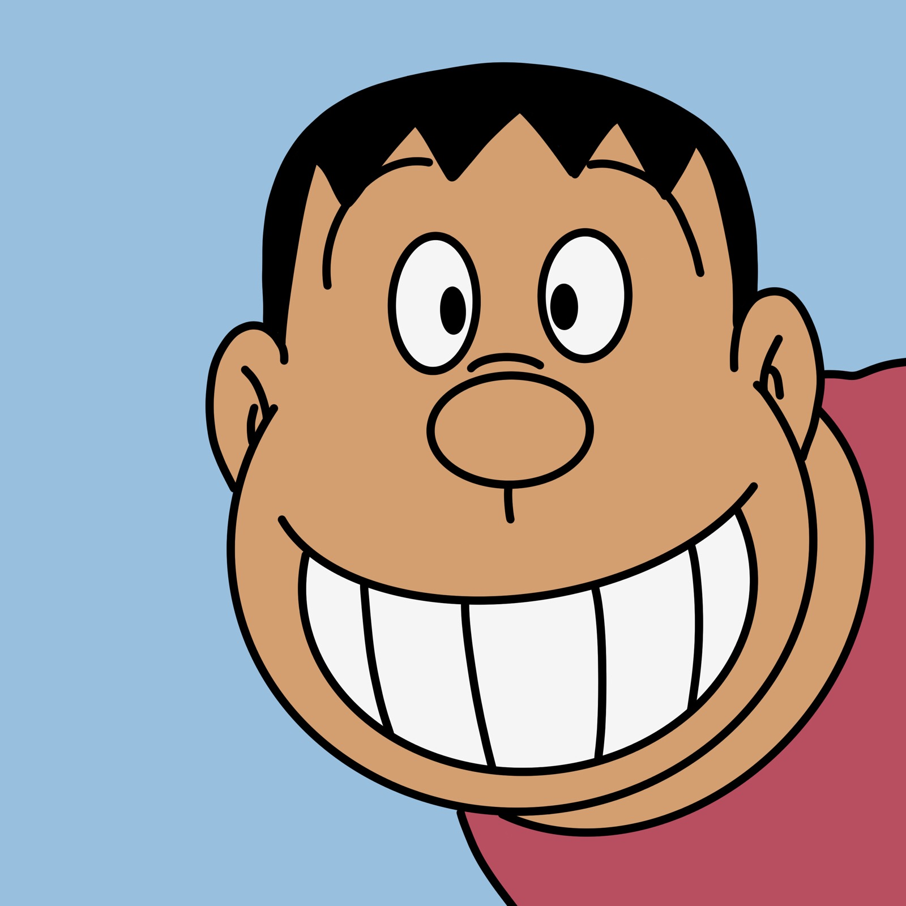
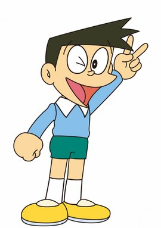
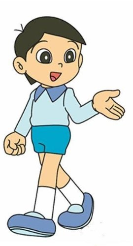

人物简介

哆啦A梦
哆啦A梦,名字的意思是铜锣卫门。心肠好，乐于助人，做事很拼命，但却心肠软。每次大雄遇到困难，他总会帮大雄。但有时会用愚蠢的方法来帮助大雄。当它吃不到铜锣烧或人们叫他狸猫时,脾气会非常暴躁。他原来是和妹妹一样,黄色的,而且有耳朵,一天,小世修为了感谢哆啦A梦照顾他,做了一个哆啦A梦的泥娃娃,可就是耳朵老做不好,就用未来世界的工具老鼠机器人修改泥娃娃,可是小世下错了指令,那个老鼠机器人就把哆啦A梦的耳朵咬坏了,他要喝一种药振作精神,可他拿错了药,是让人大哭不止的药,结果他哭了三天三夜,嗓子也哭沙哑了,身上黄色的喷漆也都被泪水冲刷掉了,只剩下蓝色的底漆。所以哆啦A梦就成了现今这个样子。因此,他也惧怕老鼠。怕冷，最讨厌冬天。

野比大雄
野比大雄,一个单纯天真的乐天派,性格懒惰,天生迟钝,什么时候都慢半拍,迟到纪录和罚站纪录等等屡次创造新纪录。学习成绩很糟糕,运动神经迟钝,做任何事情都毛手毛脚的,智力和体力只有小学二年级的水平。性格懦弱,胆子很小经常受人欺负,遇到问题只知道逃避。意志力薄弱,没长性,虽然经常下决心,但总是半途而废,没有一次坚持到底,决心坚持时间最高纪录是48分23秒。擅长睡觉,只要想睡什么时候都能睡着,睡着仅需要0.93秒。总是看别人的东西好就眼馋,一激动就说一些漫无边际的大话或是随随便便地许下诺言然后就会哭着去求哆啦A梦,这让多啦A梦很头痛。总是拿哆啦A梦的道具去恶作剧,14年后(1988年)的10月25日跟静香订婚,并在19年后(1993年)跟静香结婚。

源静香
源静香出生在日本东京练马区小学5年级学生,很爱打扮的女孩子,是大雄的青梅竹马,大雄最好的朋友,也是大雄未来的妻子。平时爱穿一件粉色的裙子,聪明乖巧、学习认真、成绩优秀、心地善良,很受大家的欢迎。喜欢的食物有烤地瓜、芝士蛋糕和寿司。因为非常爱干净,所以很喜欢洗澡,一天不洗澡就觉得不舒服。最喜欢吃烤白薯。梦想长大后成为国际航班的空中小姐、幼儿园教师。妈妈一心想让她成为钢琴家,但和钢琴比起来,她更喜欢小提琴,不过她拉的小提琴难听到和胖虎的歌声差不多。

刚田武
大雄的同班同学，大家都叫他胖虎”。任性，蛮横，又贪婪。因为块头大，经常仗势欺人，总是把别人的东西占为己有，借给他的东西从来没还过。虽然是个粗暴的孩子王，不过很重视友情。在外面总是耀武扬威，但一回到家里却对妈妈没有丝毫抵抗能力，对妹妹胖妹则是疼爱有加。天生五音不全，有着杀猪般的歌喉，却梦想成为歌星，经常强迫大家来听他的演唱会，他可怕的歌声是大家的噩梦。优点是勇敢、有正义感，是个真正的男子汉。对于同伴，总是以大哥哥的身份照顾大家，是个有情有义的人物。最害怕妈妈。

骨川小夫
大雄的同班同学，富家子弟，对自己的长相十分自恋，自我感觉过分良好，唯独对自己的身高太矮小感到苦恼。梦想是成为一名服装设计师。喜欢追求流行，兴趣相当多样。收藏品也很丰富。他常常炫耀家里很有钱，邀请大家到家里或别墅去玩，但总是把大雄排除在外。性格狡猾，花言巧语，伶牙俐齿，还是个马屁精，有一开口就接二连三说谎或吹牛的坏毛病。如果遇到大人，更会装腔作势。

出木杉英才
性格善良，为人热情，说话又风趣。头脑聪明，知识渊博，成绩优秀，每次考试都得满分。又是个运动多面手，很有男子气概，很受女生欢迎。兴趣是下厨做菜，梦想是去火星。很会画画，画出来的东西跟照相机拍出来的一样，不过擅长的是风景画。跟静香很亲密，经常在学习上帮助静香。虽然也很喜欢静香，可是不愿意用“铭印蛋”这种道具来打动静香。